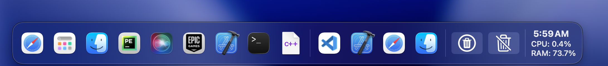
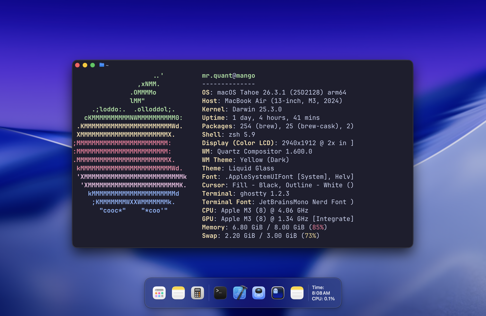

Experience a silky smooth dock animation with real-time app bounce and resizing effects.
Arrange apps, widgets, and utilities exactly how you want. Drag, drop, and reorder effortlessly.
Consumes minimal CPU and RAM while giving you a polished, professional look for your desktop.
Quickly access your most recently used apps with a bouncing icon effect and context menu.


Compatible with macOS Big Sur, Monterey, and Ventura.
Download Latest Version